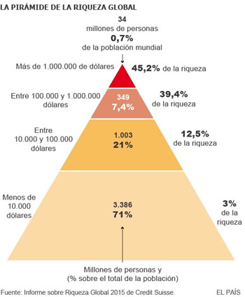

Real Chubut - Agencia de Noticias


El 1% más rico tiene tanto patrimonio como todo el resto del mundo junto
La brecha, lejos de suturarse, se ha ampliado desde el inicio de la Gran Recesión, en 2008.
Vista aérea de villa Certosa, la mansión de Silvio Berlusconi en Cerdeña. GTRES
2015 será recordado como el primer año de la serie histórica en el que la riqueza del 1% de la población mundial alcanzó la mitad del valor del total de activos. En otras palabras: el 1% de la población mundial, aquellos que tienen un patrimonio valorado de 760.000 dólares (667.000 euros o más), poseen tanto dinero líquido o invertido como el 99% restante de la población mundial. Esta enorme brechaentre privilegiados y el resto de la humanidad, lejos de suturarse, ha seguido ampliándose desde el inicio de la Gran Recesión, en 2008. La estadística de Credit Suisse, una de las más fiables, solo deja una lectura posible: los ricos saldrán de la crisis siendo más ricos, tanto en términos absolutos como relativos, y los pobres, relativamente más pobres.
En La gran brecha, qué hacer con las sociedades desiguales (Taurus, 2015), uno de los últimos libros de Joseph E. Stiglitz, el Nobel de Economía utilizaba una poderosa imagen de Oxfam para ilustrar la dimensión del problema de la desigualdad en el mundo: un autobús que transporte a 85 de los mayores multimillonarios mundiales contiene tanta riqueza como la mitad más pobre de la población global. Hoy, a esta impactante imagen, plenamente vigente, se añaden otras que dejan patente la creciente inequidad entre los privilegiados y el resto del mundo: uno de cada cien habitantes del mundo tiene tanto como los 99 restantes; el 0,7% de la población mundial acapara el 45,2% de la riqueza total y el 10% más acaudalado tiene el 88% de los activos totales, según la nueva edición del estudio anual de riqueza hecho público este martes por el banco suizo Credit Suisse, elaborado con los datos de patrimonio de 4.800 millones de adultos de más de 200 países.
¿Qué ha causado este nuevo aumento de la brecha? La entidad financiera apunta a la mejora de los mercados financieros: la riqueza de los más acaudalados es más sensible a subidas de precio de acciones de empresas y otros activos financieros que la del resto de la población. En el último año, los índices de referencia de los mercados de los principales índices bursátiles europeos y estadounidenses, el Eurostoxx 50 y el S&P 500, avanzan más de un 10% en el último año.
Otro dato apoya la tesis del aumento de la inequidad: aunque el número de muy ricos (aquellos que tienen un patrimonio igual o superior a los 50 millones de dólares) se ha reducido en cerca de 800 personas desde mediados de 2014 por la fortaleza de la moneda estadounidense frente al resto de grandes divisas, el número de ultrarricos (aquellos que tienen 500 millones o más) ha repuntado “ligeramente”, según Credit Suisse, hasta casi 124.000 personas. Ni siquiera el ajuste por tipo de cambio es capaz de contrarrestar su aumento. Por países, casi la mitad de los muy acaudalados reside en EE UU (59.000 personas), 10.000 de ellos viven en China y 5.400 tienen residencia en Reino Unido.
A la vista de los datos, no es de extrañar la satisfacción que mostraba este martes el máximo responsable de Gestión de Patrimonios de la entidad suiza para Europa, Oriente Medio y África, Michael O'Sullivan: su negocio no ha dejado de crecer desde el estallido de la peor crisis desde la Segunda Guerra Mundial. “La nuestra es una industria en pleno crecimiento, la riqueza seguirá su trayectoria al alza”. Sus previsiones no pueden ser más elocuentes. El número de personas con un patrimonio superior al millón de dólares crecerá un 46% en los cinco próximos años, hasta los 49 millones de individuos.

Toda la riqueza mundial en su conjunto, en cambio, crecerá hasta 2020 a un robusto pero inferior 39%. En España, el número de ciudadanos con un patrimonio superior al millón de dólares (algo menos de 900.000 euros) ascendía a mediados de este año a 360.000 personas, un 21% menos que en la misma fecha de 2014. España es el noveno país que mayor número de millonarios pierde en el último ejercicio. Al igual que en el resto de la eurozona, la evolución se ve distorsionada por la debilidad del euro frente a la moneda estadounidense.
LA CLASE MEDIA CHINA YA ES LA MÁS NUMEROSA EN EL MUNDO
China, el mejor exponente de los años dorados de los emergentes que empiezan a tocar a su fin, ya es el país del mundo con más ciudadanos de clase media. Según el informe anual de riqueza mundial de Credit Suisse, 109 millones de residentes en el gigante asiático poseen unos activos valorados entre 50.000 y 500.000 dólares —44.000 y 440.000 euros, respectivamente—, el rango que establece el banco helvético. Esta cantidad equivale al ingreso medio de casi dos anualidades y ofrece una protección “sustancial” frente a la pérdida del empleo, una caída brusca en el volumen de ingresos o un gasto de emergencia.
Aunque la distribución de la renta en China dista mucho de ser igualitaria, la expansión de la clase media ha seguido un camino paralelo a la evolución de su economía: a mayor crecimiento —el gigante asiático ha crecido a doble dígito ocho de los últimos 20 años y se ha convertido en la imagen del milagro emergente— más ciudadanos en la banda media de renta. En 2015, el Estado asiático superó a EE UU (92 millones) como el primer país por número de personas de clase media. Japón (62 millones de habitantes de clase media), Italia (29 millones), Alemania (28 millones), Reino Unido (28 millones) y Francia (24 millones).
Diferencias regionales
Por regiones, el 46% de la clase media mundial vive en Asia-Pacífico; el 29% residen en Europa, cuna del Estado de bienestar, y el 16%, en América. En términos relativos, en cambio, Norteamérica —con Estados Unidos y Canadá a la cabeza— se erige como máximo exponente de la clase media, con un 39% de los adultos dentro de este apéndice, seguida por Europa, donde uno de cada tres mayores de edad son clase media. La proporción se desploma en América Latina (11%) y en Asia Pacífico, la región más poblada del globo y en la que solo uno de cada 10 habitantes entra dentro del rango establecido por Credit Suisse.
Según las cifras de la entidad financiera, 664 millones de todo el mundo pueden ser considerados de clase media, solo el 14% de la población adulta global. De esta cifra, 96 millones de personas (el 2% del total) tiene una riqueza valorada en más de medio millón de dólares.